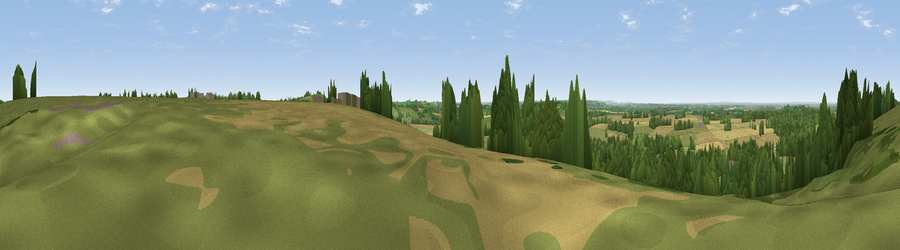

Viewpoint near Priors Marston
#20077 in England · top 23% of its area beats it · near Priors MarstonWhere it is
The exact computed spot (SP 49360 57629). Click the marker for map links.
The view, rendered

A 360° render of this exact spot computed from the terrain model, tree cover and land cover — summer colours, afternoon light, calibrated against photographs of famous viewpoints. Real trees, hedges and buildings will differ in detail.
The panorama
Grey silhouette: terrain skyline in each direction (720 bearings, Earth curvature and refraction included). Dashed green: skyline with trees (+15 m) and buildings (+8 m) as obstacles. Blue strip: how far the ground is visible on each bearing.
Where the view opens
Wedge length = distance to the farthest visible ground on that bearing (vegetation-aware). Rings at 10, 25 and 50 km.
What fills the view
46% grassland · 31% woodland · 18% cropland · 5% built-up
Angular shares of the visible panorama (visual magnitude), not map area. Landscape diversity 0.51 (0–1 Shannon).
Key numbers
More beautiful places nearby
The staircase of upgrades: each row has a higher view potential than everything closer. Driving times are estimates from straight-line distance, calibrated against real road routing — check an actual route before setting out.
| Place | Direction | Drive | Score |
|---|---|---|---|
| Black Down | SE · 2 km | ~6 min | 64.5 |
| Big Hill - Staverton Clump | ENE · 7 km | ~14 min | 68.4 |
| Viewpoint near Northend | WSW · 11 km | ~21 min | 69.7 |
| Viewpoint near Northend | WSW · 11 km | ~21 min | 70.3 |
| Viewpoint near Radway | SW · 14 km | ~26 min | 71.7 |
| Viewpoint near Ilmington | WSW · 32 km | ~50 min | 72.6 |
| Viewpoint near Meon Vale | WSW · 34 km | ~52 min | 77.0 |
| Broadway Hill | WSW · 44 km | ~64 min | 77.7 |
52.21467, -1.27897 · source: osm viewpoint · position refined by local search. Computed location — check access rights before visiting.